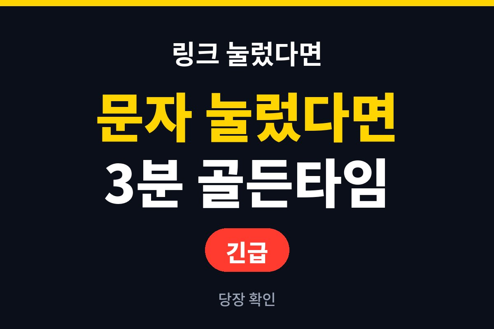
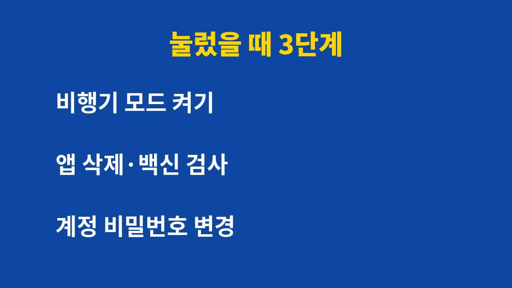
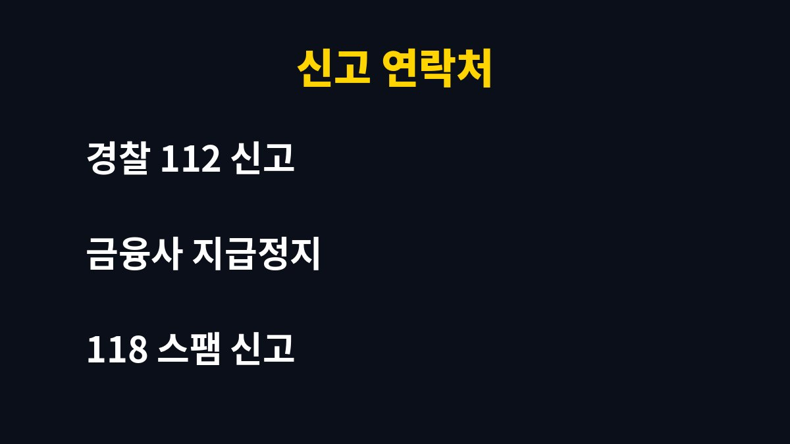

스미싱 문자 링크를 눌렀다면 가장 먼저 할 일은 폰의 통신을 끊는 것이다. 택배·청첩장·과태료 문자를 받고 무심코 눌렀다면 지금 바로 확인해야 한다.
그런데 링크만 눌렀다고 무조건 돈이 빠져나가는 것은 아니다. 오히려 당황해서 하는 행동이 피해를 키울 수 있다. 이유는 아래에 있다.
첫째, 비행기 모드를 켜서 통신을 차단한다. 악성 앱이 설치됐더라도 외부 서버와 통신하지 못하게 막는 것이 우선이다. 둘째, 문자에서 앱 설치를 요구했다면 최근 설치된 앱을 확인해 모르는 앱은 삭제한다. 셋째, 설정에서 출처를 알 수 없는 앱 설치 허용이 켜져 있다면 바로 끈다.
링크를 누르기만 하고 앱 설치나 정보 입력이 없었다면 피해 가능성은 낮은 편이다. 다만 안심하지 말고 아래 점검을 이어가는 것이 좋다.
가짜 사이트에 이름, 주민등록번호 앞자리, 카드번호, 인증번호를 입력했다면 사실상 정보가 넘어갔다고 보는 것이 안전하다. 이 경우 지체하지 말고 이용 중인 금융사 고객센터에 전화해 지급정지와 카드 재발급을 요청해야 한다.
다른 기기나 번호로 전화해야 한다. 이미 악성 앱이 깔린 폰으로 통화하면 통화 내용이 노출되거나 전화가 가로채질 수 있기 때문이다.
| 상황 | 위험도 | 해야 할 일 |
| 링크만 눌렀다 | 낮음~중간 | 비행기 모드, 브라우저 기록 삭제, 백신 검사 |
| 앱을 설치했다 | 높음 | 통신 차단, 앱 삭제, 초기화 고려 |
| 정보를 입력했다 | 매우 높음 | 지급정지, 카드 재발급, 비밀번호 변경 |
| 돈이 빠져나갔다 | 긴급 | 112 신고, 금융사 지급정지 |

폰이 안전하다고 확인된 뒤에 바꾸는 것이 원칙이다. 감염된 폰에서 바꾸면 새 비밀번호도 그대로 새어 나갈 수 있다. 가능하면 PC나 가족의 안전한 기기에서 금융 앱, 포털, 메신저 계정 순으로 비밀번호를 바꾼다.
폰에 악성 앱이 남아 있다는 의심이 들면 백신 검사로 끝내지 말고 공장 초기화까지 고려하는 것이 좋다. 초기화 전에는 사진과 연락처 같은 필요한 자료를 백업해 둔다. 단, 백업 파일에 악성 앱이 섞이지 않도록 앱 데이터는 제외하는 편이 안전하다.
피해가 있다면 경찰청 112에 신고하고 금융사에 지급정지를 요청한다. 피해가 없더라도 의심 문자는 한국인터넷진흥원 118에 신고하면 차단에 도움이 된다.

예방은 단순하다. 출처가 불분명한 문자의 링크는 누르지 않는다. 택배는 공식 앱이나 송장번호로 직접 조회한다. 통신사 스팸 차단 기능을 켜 두고, 출처를 알 수 없는 앱 설치는 막아 둔다. 가족, 특히 부모님께 이 내용을 미리 알려 두는 것도 좋은 방법이다.
이런 생활 보안 정보가 도움이 됐다면 블로그를 구독해 두는 것이 좋다.
기사·공식 발표 기준이며 출시·가격 정보는 바뀔 수 있다.